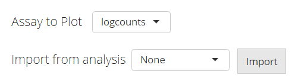
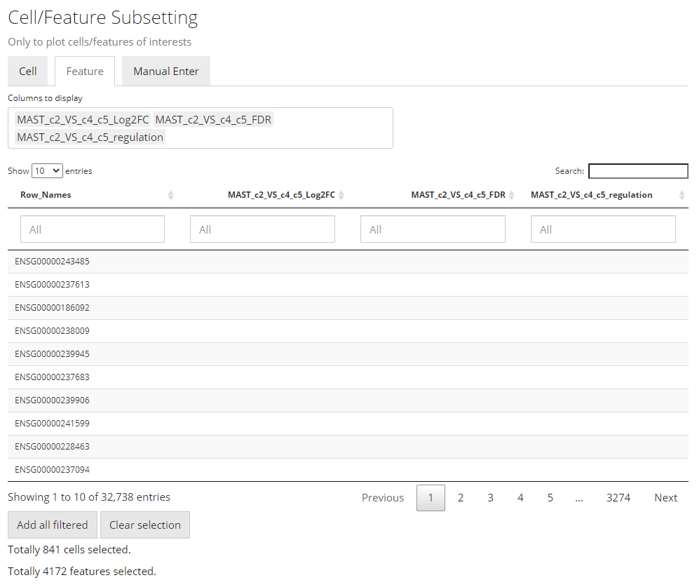
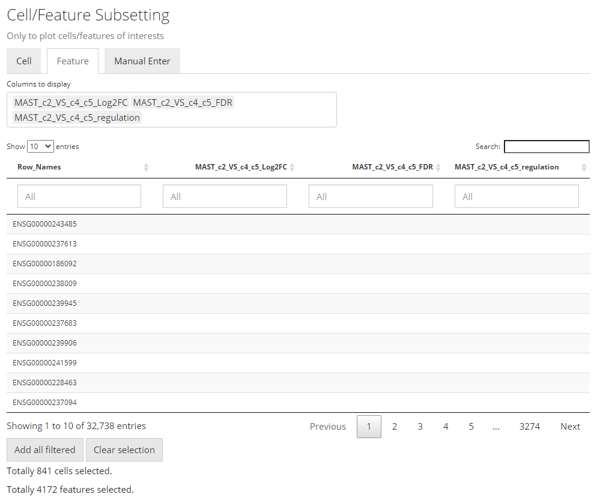

Introduction
This section describes the usage of the user interface (UI) for singleCellTK (SCTK) generic heatmap plotting. The underneath process is wrapped by R function plotSCEHeatmap(). For the help of R console workflow, also refer to the help page for R console.
UI Layout

entry
The UI for plotting a generic heatmap is constructed with 5 sections: data input, data subsetting, annotation adding, parameter setting, and finally, plotting.
Data Input

The data used for plotting a heatmap can only be a feature expression matrix, technically called assay in R language. This will be set at the selection input “Assay to Plot”.
There is a second selection called “Import from analysis” which is used for the fast setting of plotting a differential expression (DE) analysis or marker detection specific style. The detail of this feature will be introduced later.
Data Subsetting

Similar to the condition definition in the DE analysis panel, here SCTK also adopts a data table to do a filtering and select the cells and features, in order to maintain the maximum flexibility. By default, all the cell annotation available will be displayed as shown in the screenshot above, as well as the feature annotation.
Generally, to make a selection, users will first find the annotations which can define the cells or features of interests, apply the filter, and then press “Add all filtered” to finish the selection.
To make the operation cleaner, user can choose to only display the annotation classes of interests at the multi-selection input “Columns to display”. The outcome will look like the screenshot below.

The screenshot above also demonstrates one type of annotation filtering - by category. When the annotation of interests is categorical (in terms of R language, a character or logical vector or a factor), filters can be applied by selecting the categories of interest. While the screenshots below demonstrates another type of filering - by limiting a range to a continuous data (in R, a numeric or integer vector).

Finally, if no annotation is available, or if users are not sure what annotation to use, SCTK provides a third tab that allows direct pasting a list of unique cell/feature identifiers. As shown below:

The identifiers pasted to the text box should be able to uniquely identify the cells or features, and they have to be able to be found in the background information (i.e. the background SingleCellExperiment [SCE] object). However, they do not necessarily have to be the default identifiers. That is to say, identifiers that can be found in existing annotation are also acceptable. To accomplish this, users only need to select what class of annotation they intend to use at the selection input “Match input cell/feature identifiers by”. Note that the option “Row Names” indicates the default identifier when no annotation is available. For example, usually in a “cellRanger” style data, the default feature identifiers would usually be “Ensembl IDs”, while “gene symbols” will be embedded in the feature annotation. When users only have a list of genes symbol, they can directly use this list, and select the annotation for “gene symbol”, instead of going for some other external tools to transfer the “symbols” into “IDs”.
Annotation Adding

In this sub-panel, users can attach the annotations to be shown in the heatmap legend, and changes in colors are allowed. As mentioned previously, there are two types of values - categorical and continuous. For categorical information, the color setting will look like the screenshot above. All categories will be displayed with a color input.

While for a continuous value, users will still be asked if the value is categorical or continuous. The reason is that, technically, sometimes there are annotations generated in a continuous numeric data type but indicating categorical information, such as clusters labeled with integers. If users select “Categorical”, the similar color selections will be displayed as in the previous screenshot. If “Continuous” is selected, a different color selection UI will be shown, as the screenshot above. Here users will be asked to set two colors for a color gradient.
Note that when categorical annotation is wanted but too many categories are detected, SCTK will not display any color selection, in order to avoid a UI “overflow”.
Other Parameters

This is the last sub-panel for the generic heatmap setting.
- Heatmap splitting - multi-selection inputs “Split columns (cell) by” and “Split rows (feature) by”. By splitting the heatmap in row/column, the clustering of rows/columns will be performed in each splitted group separately. The procedure is also called semi-heatmap in some cases.
- Label adding - checkbox inputs “Add cell/feature labels”. The labels added here are text identifiers attached next to each row/column. Not recommanded when there are a large amount of features/cells to plot.
- Dendrogram adding - checkbox inputs “Show dendrograms for”. Adding the dendrogram of cell/feature clustering to the top/left. The dendrograms will also be splitted if the heatmap splitting is also requested.
- Normalization - checkbox input “Z-Score SCale”. Whether to perform z-score normalization to the data matrix to plot.
- Value trimming - numeric sliding input “Trim”. Trim the value in the data matrix to plot to the closer bound of a range if a value is out of the range. The numeric slider UI dynamically changes with the data if normalized.
- Heatmap color setting - “Color Scheme”. User can set the colors of the highest value, the lowest value and the middle value for the heatmap. Meanwhile, some frequently used presets are also provided. s

Additional Usage
The documentation above is for the general usage of SCTK Heatmap page. While heatmap is an important visualization method for other analysis, SCTK allows importing some types analysis results. Currently, DE analysis and marker detection results are supported. Here, we will present an example of importing the DE analysis result, which was produced in the DE UI documentation.

First, users need to go back to the top of the Heatmap panel, and find “Import from analysis” selection input. On selecting "Differential Expression", the session will scan the background data and show a list of the analysis information for users to choose from. After selecting the analysis of interests, click “Import”.
The import functionality will automatically fill most of the options afterwards, including making up some temporary DE specific annotations and subset the data accordingly.
 

Note that the features automatically selected are all of the ones stored to the result. In other words, this is affected by the parameters used when running the DE analysis. However, sometimes users might not want to plot all of them but apply some further filters instead. For example, using features with the absolute value of Log2FC greater than 1 usually produces cleaner figure, than setting that bound to 0.25. To apply this filter in the UI, users need to click on the input box below the column title in the table. If the column is for categorical information, then just click on the categories of interests; else if it is numeric, users can either manually drag the sliders or type a “formula” into the input box. The formula follows the rule: {low}...{high}, where one of the two bounds can be omitted for a one-end range. For example if users want to apply a filter described above for Log2FC values, they need to first click “Clear selection”, type 1... , click “Add all filtered”, then type ...-1, and click “Add all filtered” again.

Other heatmap settings will also be automatically filled for a DE specific heatmap.